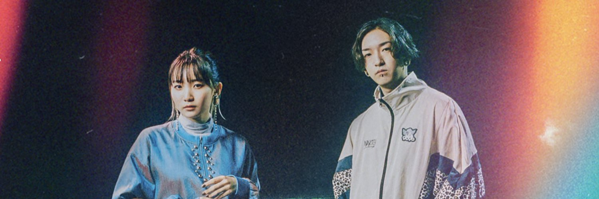

Yoasobi (stylized in all caps) is a Japanese music superduo formed by Sony Music Entertainment Japan, composed of Vocaloid producer Ayase, and singer-songwriter Ikura. Represented by the slogan "novel into music", the duo has released songs based on novels posted on Monogatary.com, a novel-centered social media operated by their label, which is also from various media like novels written by professional authors, books, and letters.
Yoasobi won two Artist of the Years at the 2021 MTV Video Music Awards Japan and the 2022 Space Shower Music Awards, and Special Achievement Award at the 63rd Japan Record Awards.
The name "YOASOBI" originates from the Japanese word 夜遊び, meaning "nightlife". Ayase, who is a producer of the group said he named it as a wish that he could take on various playful challenges by comparing the appearance of acting as an individual to the appearance of daytime and the appearance of two people acting as YOASOBI as the appearance of the night.
Yoasobi belongs to the genre of J-pop (Japanese pop songs). Music of Yoasobi has obvious features like fast pace, sophisticated instrument arrangement in all the frequencies, iterated chord progressions and the shouting of Ikura.
